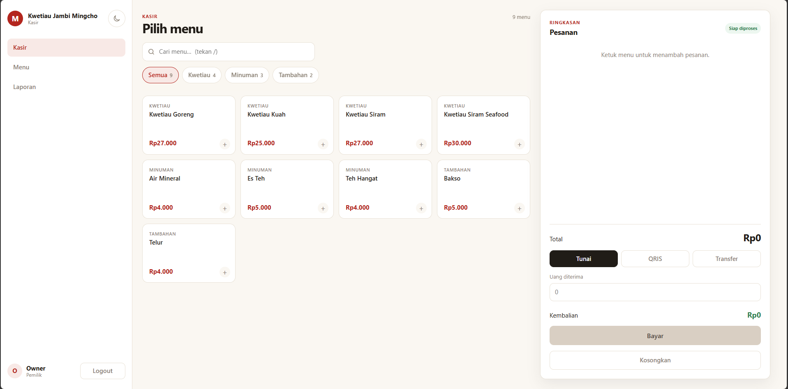
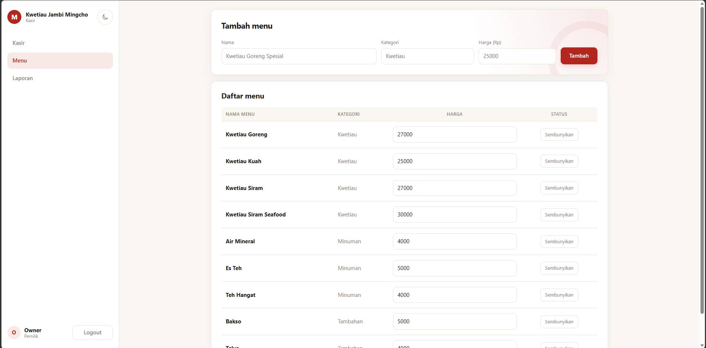
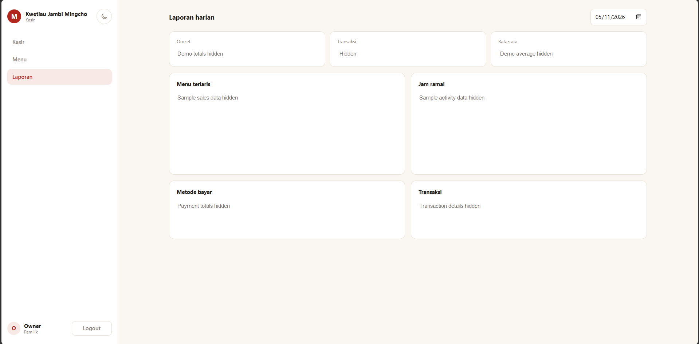

Menu catalog & search
Browse 9 menu items across Kwetiau (4), Minuman (3), and Tambahan (2), or search the catalog by name.
CASE STUDY · POINT OF SALE
A cashier and sales management app built for Kwetiau Jambi Mingcho, an UMKM restaurant.
PRODUCT PREVIEW
Three screens from the cashier app. Sales figures and transaction details in the report preview are obscured.



WHAT IT DOES
The app brings menu management, order checkout, and daily sales visibility into one place for restaurant staff.
Browse 9 menu items across Kwetiau (4), Minuman (3), and Tambahan (2), or search the catalog by name.
Build an order from the menu and review its total in the checkout panel before payment.
Add items by name, category, and price; update prices or hide items from the cashier catalog.
Select cash, QRIS, or transfer. The cashier panel also includes cash received and change fields.
Review daily revenue, transactions, average sale, best-selling menu items, busy hours, payment methods, and transaction history.
BUILD NOTES
TODO: List languages, frameworks, database, and tools actually used.
TODO: Describe the parts you personally designed and implemented.
TODO: Add one challenge and how you addressed it.